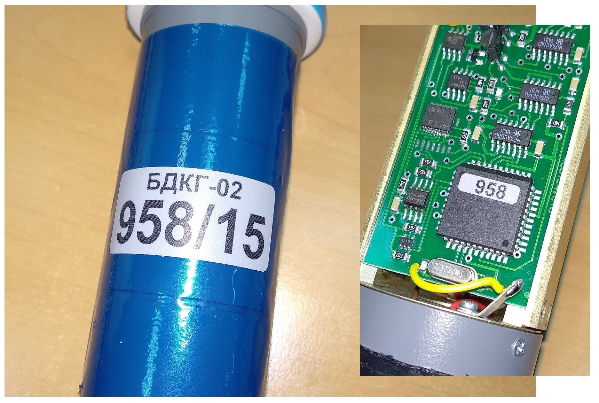
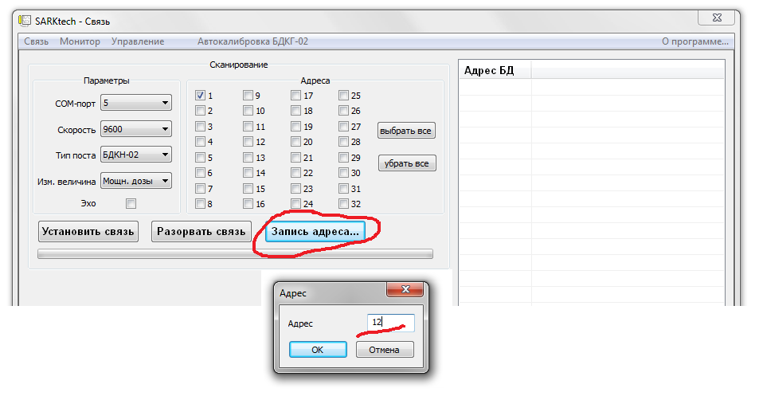
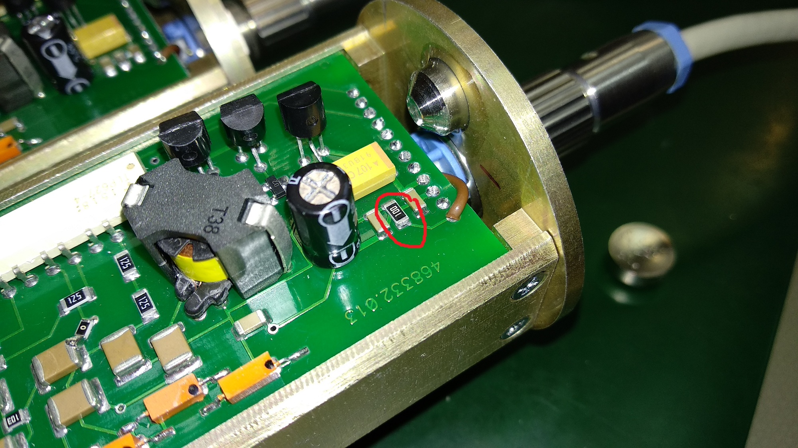
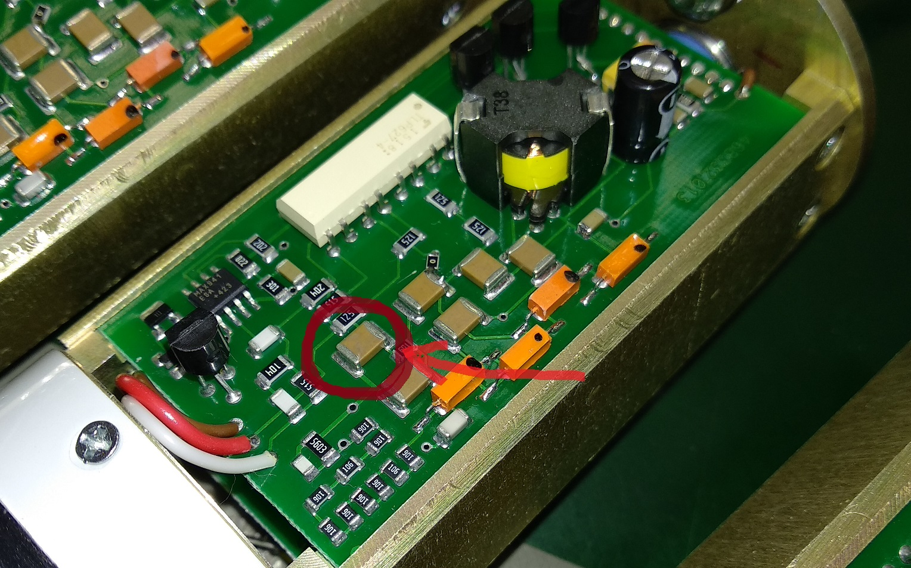

БДКГ-02
Паспорт настройки
- Приклеить наклейку с номером на угол процессорной платы
- Приклеить на прибор стикер с указанием номера прибора и его адресом (например: 854/1, где 854 — номер
прибора, 1 — адрес)

- В перечень записать дату, количество блоков, отданных в настройку,
и ФИО регулировщика.
- Подключение блока детектирования к компьютеру производится с помощью адаптера
USB-COMi-Si-M и кабеля с дополнительными контактами питания
- Работа с БДКГ-02 осуществляется с помощью программы SARKtech.
Если не подключается: проверить уровень высокого напряжения на плате усилителя: если напряжение
≈ 5V,
следует дождаться (может занять 2 минуты), когда напряжение подымется на нормальный рабочий уровень, сразу
же присвоить необходимый адрес

- Присвоить адрес
- Перейти на вкладку "Управление"
Паролем служит текущее системное время без ":". Например: если текущее время
"11:45",
то паролем будет "1145"
- Используя функцию «Ид. Данные (Запись)» присваиваем каждому прибору свой номер. Проверяем
правильность
внесенных изменений нажав «Ид. Данные (Чтение)»
- Используя функцию «Время Инт. (Чтение)» проверяем значение времени (норма — 255)
- Используя функцию «Пороги (запись)» присваиваем устанавливаем минимальное значение 500,
максимальное
1000
- Используя функцию «Коэф. (Запись)» изменяем значение третьего коэффициента первого диапазона (с
1.6599
на 0.6599). Проверяем правильность внесенных изменений нажав «Коэф. (Чтение)»
- Проконтролировать ток потребления ≈ 8 мА. Ток можно измерить по напряжению на 10 Ом
резисторе (должно быть 10*8=80V)

- В программе переходим на вкладку «Монитор» . Вольтметром на пределе 1000В проверить уровень высокого
напряжения на плате усилителя в трех диапазонах (~400В, ~400V, ~460). Переключение диапазонов
осуществляется
в нижней части окна программы. Полученные значения записать в перечень.

- Проконтролировать показания на фоне ≈ 0,3-0,7 с-1
- Поднести источник гамма-излучения Cs-137 активностью 105 Бк. Записать в перечень данные в
трех
диапазонах
(Значения из колонки «Мощн. Дозы / Пл. Потока»). Перед началом измерений нажать «Сброс»
- Отдать БД на сборку стаканов
- Отдать собранные БД на линейку с чистыми паспортами для приработки и калибровки.
Номер в паспорт не записывать!! Писаренко сам присвоит номер паспорту!!
- После линейки у всех БД снять "Ид.данные", "Время инт", "Пороги", Коэффициенты в трёх диапазонах и подшить в
паспорт
- Блоки с хорошими данными поставить на калибровку фона
- Снять градуировочное число
- Отдать на проверку герметичности. После успешного прохождения
испытания в паспорте настройки делается отметка «Герметичность +» и клеится наклейка на БД
- Выставить значение времени интегрирования равным 5
- Блок готов